Bühne · Incarnations, Forms of Heaven & Playscripts · nach dem Revelations-Archiv
Das Theater
Bevor die Books of Blood erschienen, stand Barker jahrelang auf und hinter Londoner Bühnen — als Dramatiker und Regisseur der Dog Company. Zwei Sammelbände und eine wachsende Reihe von Playscript-Einzelausgaben halten dieses Kapitel im Druck.
Incarnations 1995
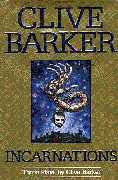
Worum es geht
Drei Stücke aus den Theaterjahren: Colossus über den Maler Goya, die dunkle Romanze Frankenstein in Love und The History of the Devil, in dem der Teufel vor Gericht steht. 1995 bei HarperPrism erstmals gesammelt.
Clive über das Buch
-
Im Vorwort beschrieb Barker das Erzählen als Überstreifen fremder Häute: Je unähnlicher ihm die geliehenen Gesichter — ein visionärer Maler wie Goya, der Teufel selbst —, desto spannender der Blick durch ihre Augen.
Introduction to Incarnations, 1995
-
Zur Veröffentlichung lud er Theatergruppen ausdrücklich ein, die Stücke zu inszenieren — Amateure wie Profis; die Rechte stellte er bewusst offen zur Verfügung.
AOL-Transkript, 1997
Ausgaben
Klick vergrößert das Cover
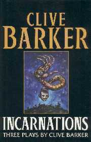
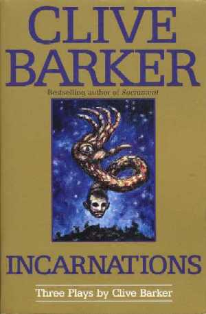
Forms of Heaven 1996
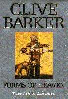
Worum es geht
Der zweite Band der gesammelten Stücke: die Clowns-Tragödie Crazyface, das Liverpool-Stück Paradise Street und Subtle Bodies — wieder mit Barkers eigener Einladung, das Material auf die Bühne zu holen.
Clive über das Buch
-
Zwei Jahre nach den Sammlungen freute sich Barker über Inszenierungen rund um die Welt — zeitgleich liefen Produktionen in Amerika, Schweden, Deutschland, England und Schottland.
People Online, 1998
-
Sein erklärtes Ziel war, Menschen ans Lesen von Theaterstücken zu bringen: Wo keine Bühne erreichbar ist, soll das Stück im Kopf der Leser gespielt werden.
Toronto Sun, 1996
Ausgaben
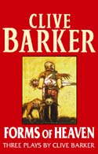
Die Playscripts
Seit 2017 bringt das Clive Barker Archive (Phil & Sarah Stokes) einzelne Stücke als Taschenbuch-Playscripts heraus — darunter frühe Arbeiten wie The Magician und Hunters in the Snow. Schon zuvor druckten Magazine einzelne Stücke: The History of the Devil erschien 1991 in Pandemonium, A Clowns' Sodom 1992 im Magazin Dread.
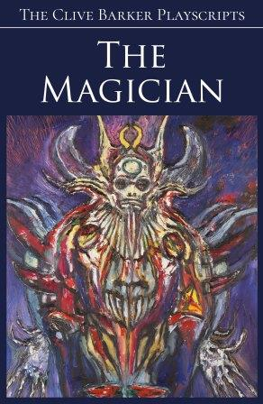
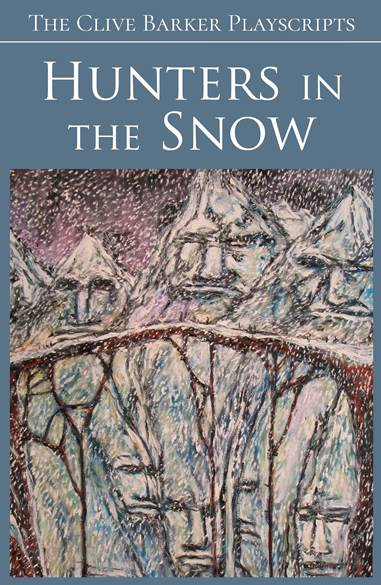
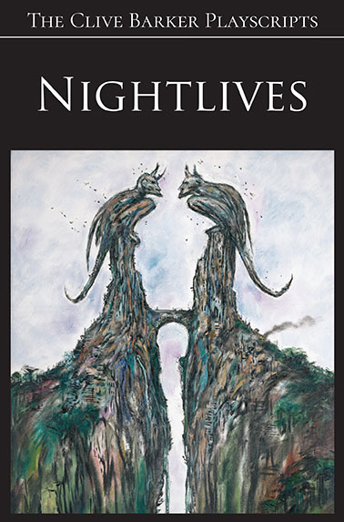
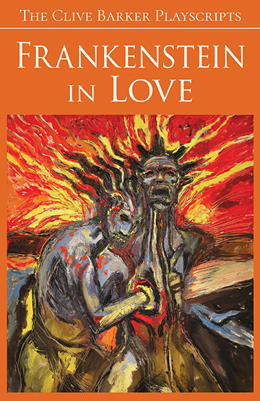
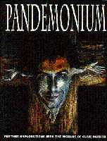
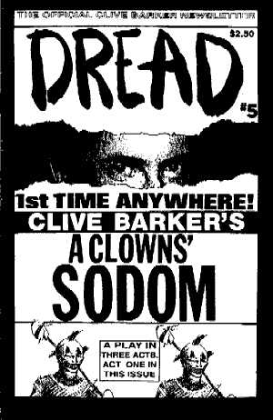
Cover-Abbildungen: Revelations-Archiv (clivebarker.info) · Artwork teils © Clive Barker, teils © der jeweiligen Verlage